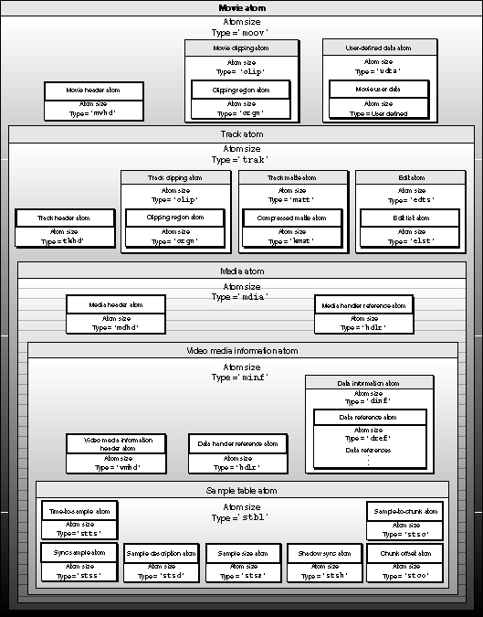

Overview of the Movie Resource Atom
Movie resources consist of movie atoms, which in turn contain track atoms, which in turn contain media atoms (see the chapter "Movie Toolbox" in this book for information about the relationships between movies, tracks, and media structures). Leaf atoms usually contain tables of data. For example, the track atom contains the edit atom, which contains a leaf atom called the edit list atom. The edit list atom contains an edit list table. (See Figure 4-15 on page 4-17 for an illustration of the edit atom, and see Figure 4-16 on page 4-17 for an illustration of the edit list table.)Figure 4-4 provides a conceptual view of the organization of a QuickTime movie, which, in this case, has one track containing video information. Each nested box in the illustration represents an atom that belongs to the atom underlying it. The figure does not show the data regions of any of the atoms. These areas are described in the pertinent sections that follow.
Figure 4-4 Sample organization of a one-track video movie

Subtopics
- Movie Atoms
- Movie Header Atoms
- Track Atoms
- Track Header Atoms
- Media Atoms
- Media Header Atoms
- Handler Reference Atoms
- User-Defined Data Atoms
- Clipping Atoms
- Clipping Region Atoms
- Track Matte Atoms
- Compressed Matte Atoms
- Edit Atoms
- Edit List Atoms
- Media Information Atoms
- Data Information Atoms
- Data Reference Atoms
- An Introduction to Samples
- Sample Table Atoms